This section goes over the basics of Quantum Algorithms, starting with simple demonstrations of quantum effects.
An accompanying Jupyter notebook with the Qiskit code used to generate the images in this chapter is available here.
This chapter and the accompanying Jupyter notebook are currently a work in progress.
This section will go through demonstrations of quantum effects in quantum circuits. While these are of limited practical use, they are worth going through to develop a foundational grasp of quantum algorithms.
The first and second subsection cover the Quantum Teleportation and Superdense Coding quantum communication protocols which both make use of Bell states of entangled qubits in different ways. The last subsection describes the Deutsch-Jozsa algorithm which leverages the nature of quantum systems to form superpositions of states.
Quantum Teleportation is a protocol for sharing quantum information over a distance by using the quantum property of entanglement.
If two parties, Alice and Bob, share a pair of entangled qubits they can use this to 'teleport' the state of another qubit from one party to the other, as shown in the sketch below.
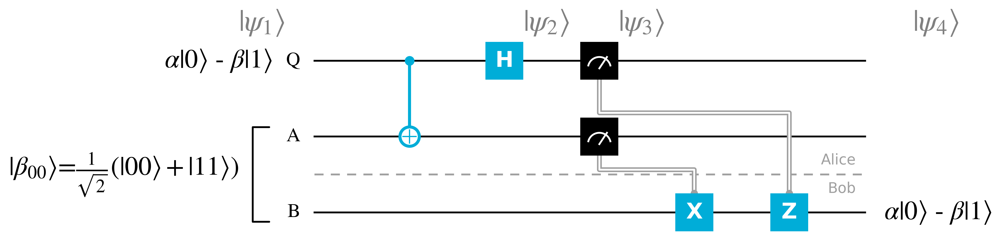
To summarise what's occurring in the quantum teleportation protocol:
To get a better grasp of how the Quantum Teleportation protocol functions, it is worth looking at the annotated Qiskit circuit below and go through the states at different points along the circuit.
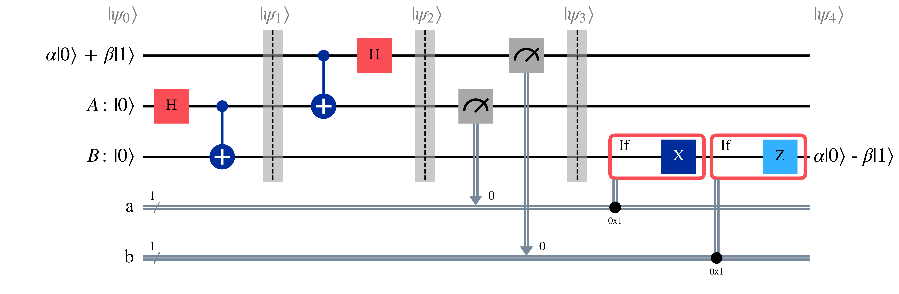
At the beginning of the circuit, before the Bell state has been initialised, the qubit can be represented by the composite state $\ket{\psi_0}$ $$\psi_0=(\alpha\ket{0}+\beta\ket{1})\otimes\ket{0}\otimes\ket{0}$$
Bell state then is generated on $A\otimes B=\ket{00}$.
First, the Hadamard gate is applied on qubit $A$ $$\frac{1}{\sqrt{2}}(\ket{0}+\ket{1})(\ket{0})$$ Which can be reformulated for ease of calculation as $$\frac{1}{\sqrt{2}}(\ket{00}+\ket{10})$$
Then, a $C_{NOT}$ gate is applied to qubit $B$ using qubit $A$ as the control qubit, resulting in qubits $A$ and $B$ forming the following Bell state $$\beta_{00}=\frac{1}{\sqrt{2}}(\ket{00}+\ket{11})$$
This results in the following prepared state for the Quantum Teleportation protocol $$\psi_1 = \frac{1}{\sqrt{2}}(\alpha\ket{0}+\beta\ket{1})(\ket{00}+\ket{11})$$ Which can be expanded as $$\psi_1 = \frac{1}{\sqrt{2}}(\alpha\ket{000} + \alpha\ket{011} + \beta\ket{100} + \beta\ket{111})$$
As the first part of the protocol, Alice applies the $C_{NOT}$ gate on the second qubit $A$, using the first qubit $Q$ as the control qubit. $$\frac{1}{\sqrt{2}}(\alpha\ket{000} + \alpha\ket{011} + \beta\ket{110} + \beta\ket{101})$$ Which again can be rearranged as $$\frac{1}{\sqrt{2}}(\alpha\ket{0}(\ket{00} + \ket{11}) + \beta\ket{1}(\ket{10} + \ket{01}))$$
Then the $H$ gate is applied on the first qubit leading to $\ket{\psi_2}$ $$\ket{\psi_2} = \frac{1}{2}\alpha(\ket{0}+\ket{1})(\ket{00} + \ket{11}) + \beta(\ket{0}-\ket{1})(\ket{10} + \ket{01}))$$
$\ket{\psi_2}$ can be rearranged by grouping together the first and second qubits $Q$ and $A$, both of which Alice possesses.
\begin{align} \ket{\psi_2} = \frac{1}{2}(&\ket{00}(\alpha\ket{0} + \beta\ket{1})\\ + &\ket{01}(\alpha\ket{1} + \beta\ket{0})\\ + &\ket{10}(\alpha\ket{0} - \beta\ket{1})\\ + &\ket{11}(\alpha\ket{1} - \beta\ket{0})) \end{align}The first two qubits are measured by Alice, also breaking this Bell pair, and this classical data is shared with Bob, as noted by the measurement gates connected to the classical channels $a$ and $b$. This results in the composite qubit state $\psi_3$ being one of the four following states, each with a probability $(\frac{1}{2})^{2}=\frac{1}{4}$
\begin{align} &\ket{00}(\alpha\ket{0} + \beta\ket{1})\\ &\ket{01}(\alpha\ket{1} + \beta\ket{0})\\ &\ket{10}(\alpha\ket{0} - \beta\ket{1})\\ &\ket{11}(\alpha\ket{1} - \beta\ket{0}) \end{align}An interesting thing can be seen from these states; the third qubit $B$ can be changed to the initial state $\alpha\ket{0} + \beta\ket{1}$ through the conditional application of $X$ and $Z$ gates. By applying a phase-flip on the third qubit $B$ via the $Z$ gate if the first qubit $Q$ is measured as $\ket{1}$, and a bit-flip on $B$ via the $X$ gate if the second qubit $A$ is measured as $\ket{1}$, we can recover $\alpha\ket{0} + \beta\ket{1}$ on qubit $B$. With this, we have achieved a teleportation of states from Alice to Bob.
Now of course, since this uses a classical channel to share information between Alice and Bob, the speed of transfer is limited by the speed of this classical communication, with an upper limit of the speed of light.
Another quantum communication protocol which makes use of Bell states is Superdense Coding.
Superdense Coding involves two parties, Alice and Bob, initially sharing one qubit each of the Bell state $\beta_{00}=\frac{1}{\sqrt{2}}(\ket{00}+\ket{11})$. To encode two bits of classical information Alice performs two gate operations on her qubit, before sending her qubit to Bob, who after simple gate operation can measure the two bit Alice encoded. This protocol is called 'Superdense' because while only one qubit is sent, two bits of information are transferred from Alice to Bob, contrary to what we would expect classically. It is visualised in the diagram below.
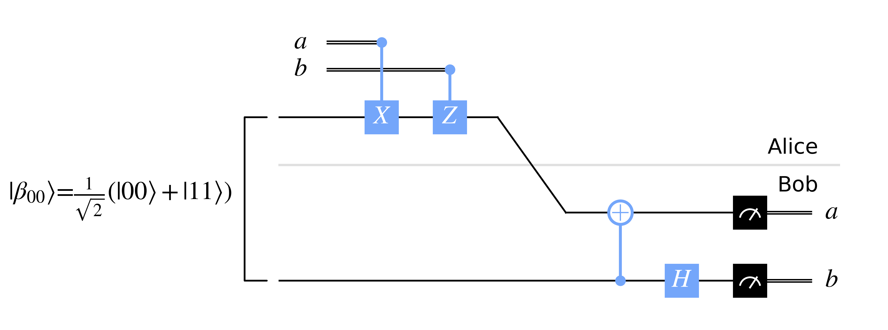
To briefly explain what happens in Superdense Coding:
To get a better grasp of how the Superdense Coding protocol functions, it is worth looking at the annotated Qiskit circuit below and understand the evolution of the Bell state.
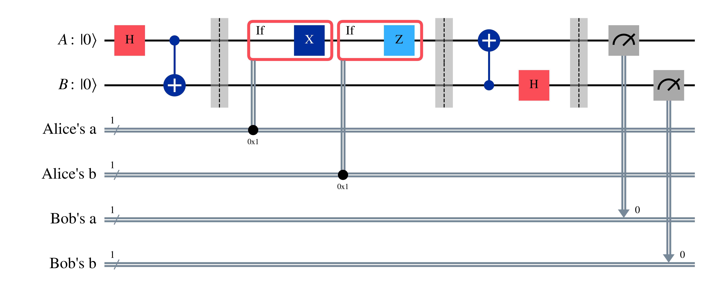
Similarly to the Quantum Teleportation protocol, a Bell state $\beta_{00}=\frac{1}{\sqrt{2}}(\ket{00}+\ket{11})$ is prepared beforehand with a $H$ gate applied on Alice's qubit $A$, followed by a $C_{NOT}$ gate applied on Bob's qubit $B$ with $A$ as the control qubit.
The conditional application of $X$ and $Z$ gates changes the Bell state $\beta_{00}$ to other Bell states.
If Alice decides to encode classical bits $a=0$ and $b=0$, then she needn't do anything, and we are left with $$\beta_{00}=\frac{1}{\sqrt{2}}(\ket{00}+\ket{11})$$
If she instead encodes $a=1$ and $b=0$, then the $X$ gate is applies on $A$ to cause a bit-flip, leading to the $\beta_{10}$ state $$\beta_{10}=\frac{1}{\sqrt{2}}(\ket{10}+\ket{01})$$
If Alice encodes $a=0$ and $b=1$, then the $Z$ gate is applies on $A$ to cause a phase-flip, leading to the $\beta_{01}$ state $$\beta_{01}=\frac{1}{\sqrt{2}}(\ket{00}-\ket{11})$$
Finally if $a=1$ and $b=1$ is encoded then both $X$ and $Z$ gates are applied on qubit $A$, leading to the $\beta_{11}$ state $$\beta_{11}=\frac{1}{\sqrt{2}}(\ket{01}-\ket{10})$$
After this, Alice sends qubit $A$ to Bob, who now has full access to both qubits in the Bell state. Since the Bell states form an orthonormal basis, Bob can distinguish each state. To measure in the computational basis though, he first has to transform them with unitary gates: a $C_{NOT}$ applied on the first qubit $A$ with the second qubit $B$ as the control qubit, followed by a Hadamard gate applied on $B$.
For $\beta_{00}=\frac{1}{\sqrt{2}}(\ket{00}+\ket{11})$ the $C_{NOT}$ leads to $$\frac{1}{\sqrt{2}}(\ket{00}+\ket{01})=\ket{0}\otimes\frac{1}{\sqrt{2}}(\ket{0}+\ket{1})=\ket{0}\ket{+}$$ Which with a Hadamard gate applied to $B$ leads to $$\ket{0}\ket{0}$$ Which can be be measured in the computational basis to return $a=0$ and $b=0$ for $A$ and $B$ respectively.
For $\beta_{10}=\frac{1}{\sqrt{2}}(\ket{10}+\ket{01})$ the $C_{NOT}$ applied to $A$ leads to $$\frac{1}{\sqrt{2}}(\ket{10}+\ket{11})=\ket{1}\otimes\frac{1}{\sqrt{2}}(\ket{0}+\ket{1})=\ket{1}\ket{+}$$ Which with $H$ applied to $B$ leads to $$\ket{1}\ket{0}$$ Which upon measurement leads to $a=1$ and $b=0$.
For $\beta_{01}=\frac{1}{\sqrt{2}}(\ket{00}-\ket{11})$ the $C_{NOT}$ applied to $A$ results in $$\frac{1}{\sqrt{2}}(\ket{00}-\ket{01})=\ket{0}\otimes\frac{1}{\sqrt{2}}(\ket{0}-\ket{1})=\ket{0}\ket{-}$$ Which with $H$ applied to $B$ leads to $$\ket{0}\ket{1}$$ Which upon measurement leads to $a=0$ and $b=1$.
Finally for $\beta_{11}=\frac{1}{\sqrt{2}}(\ket{01}-\ket{10})$ the $C_{NOT}$ applied to $A$ results in $$\frac{1}{\sqrt{2}}(\ket{11}-\ket{10})=-\ket{1}\otimes{\sqrt{2}}(\ket{0}-\ket{1})=-\ket{1}\ket{-}$$ Which with $H$ applied to $B$ leads to $$-\ket{1}\ket{1}$$ Which upon measurement leads to $a=1$ and $b=1$.
To conclude this section on simple demonstrations of quantum effects, we'll cover the Deutsch-Jozsa algorithm. The Deutsch-Jozsa algorithm demonstrates the advantage quantum circuits to place qubits to be in a superposition of states, which can be operated on in parallel and also interfere with each other.
Though first, we'll build up to the algorithm from circuits to develop an understanding of it. The algorithm deals with a unitary 'black boxes' operation acting on multiple qubits. Such a black box is also known as an 'oracle' and can be formulated as seen in the sketch below.
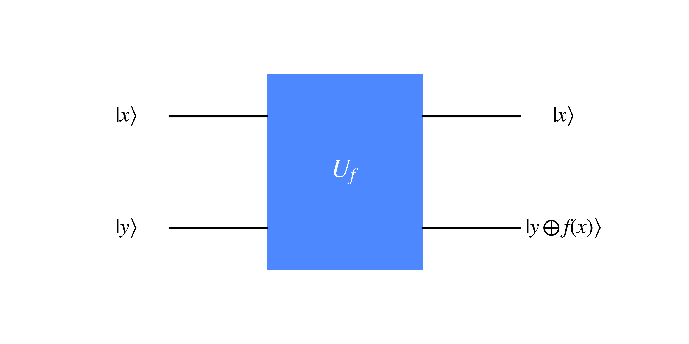
The unitary black box $U_f$ acts on the target qubit $\ket{y}$, with a function dependent on the data qubit $\ket{x}$.
Note, that the $\oplus$ is modulo two addition operation, which only returns '1' if exactly one of the two bits it is acting on is '1' (and the other is '0'). This also means that the following property holds regardless of whether $k$ is $0$ or $1$ $$0 \oplus k = k$$
In the case of the initial state $\ket{x}=\ket{+}$ and $\ket{y}=\ket{0}$ the resulting state is
\begin{align} \ket{x}\ket{y\oplus f(x)} &= \frac{1}{\sqrt{2}}(\ket{0}\ket{0 \oplus f(0)} + \ket{1}\ket{0\oplus f(1)})\\ &= \frac{1}{\sqrt{2}}(\ket{0}\ket{f(0)} + \ket{1}\ket{f(1)}) \end{align}Such a state simultaneously holds information on the results $f(0)$ and $f(1)$, as if $f(x)$ was evaluated for two possible values in parallel. Such a feature is known as quantum parallelism.
Though there is a caveat to keep in mind here: upon measurement this superposition collapses, into $\ket{0}\ket{f(0)}$ or $\ket{0}\ket{f(1)}$.
The Hadamard gate is crucial for setting up state in a superposition to exploit quantum parallelism, and a general operation on multiple qubits is is known as the Hadamard Transform (or Walsh-Hadamard Transform). The Hadamard transform involves simply applying a $H$ gate on each qubit to place them in a superposition as seen below with three qubits initially in a $\ket{0}$ state
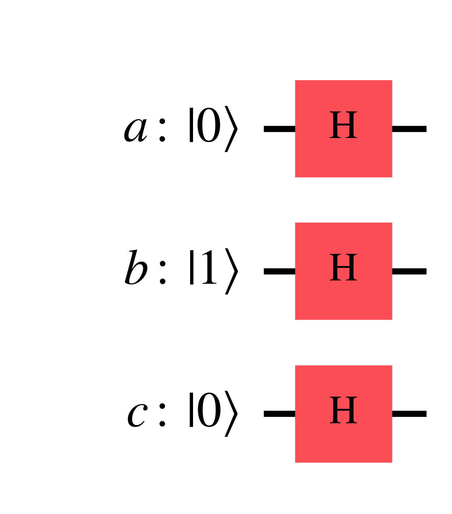
The resulting state is
\begin{align} H\ket{0}\otimes H\ket{1} \otimes H\ket{0} &= \frac{1}{\sqrt{2^{3}}}(\ket{0}+\ket{1}) (\ket{0}-\ket{1}) (\ket{0}+\ket{1})\\ &= \frac{1}{\sqrt{2^{3}}}(\ket{000} + \ket{001} - \ket{010} - \ket{011} \\ & + \ket{100} + \ket{101} - \ket{110} - \ket{111}) \end{align}Generalising this for $n$ qubits, we can represent the operation as $H^{\otimes n}$ acting on a state $\ket{x_1, x_2, ... x_n}$ resulting in a superposition of states $\ket{z_1, z_2, ... z_n}$. Such a superposition can be represented by the following sum $$H^{\otimes n} \ket{x_1, ... x_n} = \frac{1}{\sqrt{2^n}} \sum_{z} (-1)^{x_1 z_1 + ... + x_n z_n} \ket{z_1, ... z_n}$$ Which can be represented more succinctly by dropping the subscripts and using a dot product between wavevector state values $x \cdot z$ $$H^{\otimes n} \ket{x} = \frac{1}{\sqrt{2^n}} \sum_{z} (-1)^{x \cdot z} \ket{z}$$
The coefficient of $(-1)^{x \cdot z}$ in the sum above can be explained by the following: when $z_i=0$ then the coefficient is $+1$ such as $\ket{0}$ within $\ket{+}=\frac{1}{\sqrt{2}}(\ket{0}+\ket{1})$ and $\ket{-}=\frac{1}{\sqrt{2}}(\ket{0}-\ket{1})$ (for $n=1$), negative factors only appear when $x_i=1$ such as $\frac{-\ket{1}}{\sqrt{2}}$ within $H\ket{1}=\ket{-}=\frac{1}{\sqrt{2}}(\ket{0}-\ket{1})$, and the coefficient is only negative when the dot product $x \cdot z$ is odd since an even number of $-1$ factors cancel out to $+1$.
Now, let's move onto the Deutsch Algorithm which builds upon quantum parallelism by including interference between superpositions. The Deutsch Algorithm in particular determines whether an unknown function $f(x)$ with possible inputs $x={0,1}$, and two possible outputs of $0$ and $1$, is constant or balanced. If a function is constant, then this results in the same output for all inputs, so in this case $f(0)=f(1)$. Otherwise if a function is balanced, then there is an equal likelihood of all outputs, which in this case with two possible inputs leads to $f(0)\neq f(1)$.
The advantage of the Deutsch algorithm is that we only have to evaluate $f(x)$ once, as opposed to twice for each possible input $x={0,1}$ to determine this global property of this function, as shown in the circuit diagram shown below.
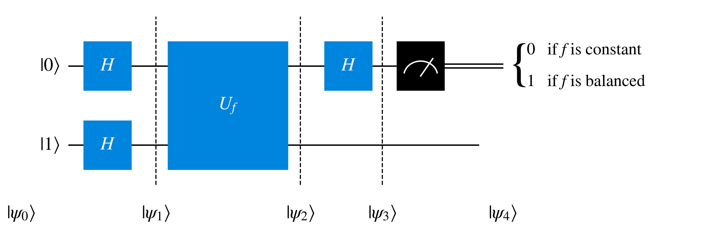
The input state is $$\ket{\psi_0} = \ket{01}$$ Upon applying the two Hadamard gates it becomes $$\ket{\psi_1} = \frac{\ket{0}+\ket{1}}{\sqrt{2}} \frac{\ket{0}-\ket{1}}{\sqrt{2}}$$
The unitary gate $U_f$ then changes the target qubit $\ket{y}$ into $\ket{y\oplus f(x)}$, applying a function $f(x)$ dependent on the data qubit state $\ket{x}$. $$\ket{\psi_2} = \ket{x}\ket{y\oplus f(x)}$$ In the case of this algorithm $\ket{x}=\frac{1}{\sqrt{2}}(\ket{0}+\ket{1})$ and $\ket{y}=\frac{1}{\sqrt{2}}(\ket{0}-\ket{1})$, so $$\ket{\psi_2}=\frac{1}{\sqrt{2}} (\ket{0} \frac{\ket{0\oplus f(0)} - \ket{1\oplus f(0)}}{\sqrt{2}} + \ket{1} \frac{\ket{0\oplus f(1)} - \ket{1\oplus f(1)}}{\sqrt{2}} )$$
To simplify this we can use the following relation $$\frac{1}{\sqrt{2}} (\ket{0\oplus k} - \ket{1\oplus k} ) = (-1)^{k} \ket{-}$$ Which holds for $k=0$
\begin{align} \frac{1}{\sqrt{2}} (\ket{0\oplus 0} - \ket{1\oplus 0}) &= \frac{1}{\sqrt{2}} (\ket{0} - \ket{1}) \\ &= (+1) \ket{-} \\ &= (-1)^{0} \ket{-} \end{align}And for $k=1$
\begin{align} \frac{1}{\sqrt{2}} (\ket{0\oplus 1} - \ket{1\oplus 1}) &= \frac{1}{\sqrt{2}} (\ket{1} - \ket{0}) \\ &= (-1)\frac{1}{\sqrt{2}} (\ket{0} - \ket{1}) \\ &= (-1) \ket{-} \\ &= (-1)^{1} \ket{-} \end{align}Substituting the relation into $\ket{\psi_2}$ results in
\begin{align} \ket{\psi_2} &= \frac{1}{\sqrt{2}} ((-1)^{f(0)}\ket{0}\ket{-} +(-1)^{f(1)}\ket{1}\ket{-}) \\ &= \frac{(-1)^{f(0)}}{\sqrt{2}} (\ket{0} + (-1)^{f(1)-f(0)}\ket{1})\ket{-} \end{align}So
$$\ket{\psi_2} = \begin{cases} \pm \ket{+} \ket{-} & \text{if } f(0) = f(1) \\ \pm \ket{-} \ket{-} & \text{if } f(0) \neq f(1) \end{cases}$$Upon applying the Hadamard gate to the data qubit, which is the first qubit, this leads to $$\ket{\psi_3} = \begin{cases} \pm \ket{0} \ket{-} & \text{if } f(0) = f(1)\\ \pm \ket{1} \ket{-} & \text{if } f(0) \neq f(1) \end{cases}$$
Upon measurement of the data qubit $\ket{x'}$ in $\ket{\psi_4}=\ket{x'}\ket{-}$, we can determine whether the function $f(x)$ is constant ($f(0)=f(1)$) or balanced ($f(0)\neq f(1)$) $$x' = \begin{cases} 0 & \text{if } f(0) = f(1) \text{, hence constant} \\ 1 & \text{if } f(0) \neq f(1) \text{, hence balanced} \end{cases}$$
Thanks to the interference between the two possible function outcomes $f(0)$ and $f(1)$, in one measurement we can determine the global property of whether the function is constant or balanced. This interference can be seen in the $(-1)^{f(1)-f(0)}$ term within $\ket{\psi_2}$. This means that after transformation to $\ket{\psi_3}$ and measurement of the data qubit, if the output is $0$ then $f(x)$ is constant, and if the output is $1$ then $f(x)$ is balanced.
Now, let's generalise this from merely one data qubit to $n$ data qubits in the Deutsch-Jozsa algorithm, as depicted below which now depends on $x$ being a value which varies from $0$ to $2^{n}-1$.
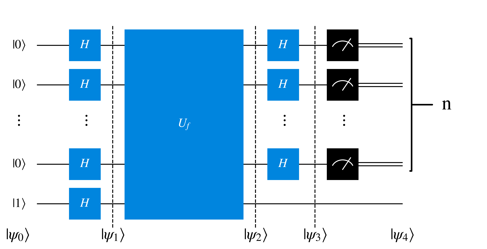
The input state is $$\ket{\psi_0}=\ket{0}^{\otimes n} \ket{1}$$
After the Hadamard transform it becomes $$\ket{\psi_1}= H^{\otimes n}\ket{0}^{\otimes n} \otimes \frac{\ket{0}-\ket{1}}{\sqrt{2}}$$
We can substitute in the sum of superpositions we explained earlier $$H^{\otimes n} \ket{x} = \frac{1}{\sqrt{2^n}} \sum_{z} (-1)^{x \cdot z} \ket{z}$$ Which for $n$ qubits in the $\ket{0}$ state leads to an equal superposition of states $$H^{\otimes n} \ket{0}^{\otimes n} = \frac{1}{\sqrt{2^n}} \sum_{z} \ket{z}$$ So by substituting this in, and relabeling $z$ as $x$, we get the state $$\ket{\psi_1}= \frac{1}{\sqrt{2^n}} \sum_{x} \ket{x} \frac{\ket{0}-\ket{1}}{\sqrt{2}}$$
Upon application of the unitary gate $U_f$, the function $f(x)$ is evaluated so $\ket{x, y}$ evolves into $\ket{x, y\oplus f(x)}$ as seen in the Deutsch algorithm, this time leading to $$\ket{\psi_2} = \frac{1}{\sqrt{2^n}}\sum_{x} \ket{x} \frac{\ket{0\oplus f(x)}-\ket{1 \oplus f(x)}}{\sqrt{2}} $$ Similarly we can again use the following relation $$\frac{1}{\sqrt{2}} (\ket{0\oplus k} - \ket{1\oplus k} ) = (-1)^{k} \ket{-}$$ So the state $\ket{\psi_2}$ is $$\ket{\psi_2} = \frac{1}{\sqrt{2^n}}\sum_{x} (-1)^{f(x)} \ket{x} \ket{-}$$
We can again use the following relation $$H^{\otimes n} \ket{x} = \frac{1}{\sqrt{2^n}} \sum_{z} (-1)^{x \cdot z} \ket{z}$$ So that after the application of $n$ Hadamard gates, $H^{\otimes n}$, the state becomes $$\ket{\psi_3} = \frac{1}{\sqrt{2^n}}\sum_{x} (-1)^{x\cdot z f(x)} \ket{x} \ket{-}$$
Then $n$ measurements are carried out to in the computational basis. If we get a bitstring of all $0$s then the function $f(x)$ is constant, otherwise if there is even one $1$ then the function is balanced.
One way of solving mathematical problems is to transform it into a problem which is easier to solve, such as the Fourier transform.
The Fourier transform is a centrally important and widely used mathematical tool. In the case of signal processing of an audio or electromagnetic wave, it can convert a signal which varies in time (also called the 'time domain') into a visualisation of the component frequencies (called the 'frequency domain').
So, for a time varying equation $f(t)$ can be transformed into a frequency varying $F(\xi)$ through the Fourier transform, where $\xi$ is frequency and $t$ is time, as shown below
$$F(\xi) = \int_{-\infty}^{\infty} f(t) e^{-2\pi i\xi t} dt$$
The inverse Fourier transform inverts this, yielding the time domain $f(t)$ from the Frequency domain $F(\xi)$
$$f(t) = \int_{-\infty}^{\infty} F(\xi) e^{2\pi i \xi t} dt$$
To better understand this, it's worth demonstrating the Fourier transform of a superposition of waveforms as seen below.
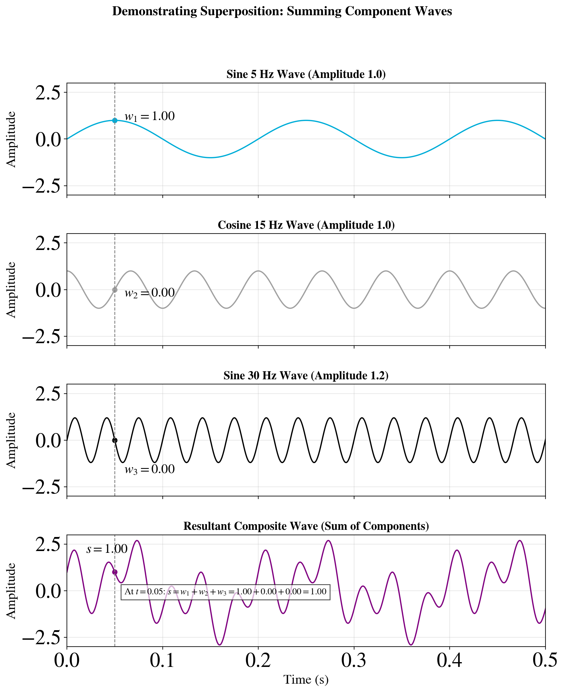
Before performing Fourier Transforms on the above waveforms, it's worth noting a rather useful integral identity
$$\delta (a - b) = \int_{-\infty}^{\infty} e^{-2 \pi i (a-b) x } dx $$
Where $\delta (a-b)$ is the Dirac delta, which is only equal to 1 if its argument, $a-b$, is equal to $0$, and is otherwise zero.
Let's start with the Fourier Transform of the first waveform which is a sine wave with a frequency of $\xi_1=5$ Hz.
$$F_{1}(\omega) = \int_{-\infty}^{\infty} \text{sin}(2\pi \xi_1 t) e^{-2 \pi i \xi t} dt$$
The sine equation can also be re-expressed as $$\text{sin}(\theta) = \frac{1}{2 i} (e^{i\theta}-e^{-i\theta})$$ Which when substituted into $F_{1}(\xi)$ leads to
\begin{align} F_{1}(\xi) &= \frac{1}{2 i} \int_{-\infty}^{\infty} (e^{2\pi i\xi_{1}t}-e^{-2\pi i\xi_{1} t}) e^{-2\pi i\xi t} dt \\ &= \frac{1}{2 i}\int_{-\infty}^{\infty} e^{-2\pi i(\xi-\xi_{1})t} dt - \frac{1}{2 i}\int_{-\infty}^{\infty} e^{-2\pi i(\xi+\xi_{1})t} dt \\ \end{align}
Then, we can substitute the aforementioned integral identity leading to the Dirac delta $$F_{1}(\omega) = \frac{1}{2i} \delta(\xi-\xi_{1}) - \frac{1}{2i}\delta(\xi+\xi_{1})$$ Which when using $\frac{1}{i}=-i$ turns into $$F_{1}(\omega) = -\frac{i}{2}\delta(\xi-\xi_{1}) + \frac{i}{2}\delta(\xi+\xi_{1})$$
When this Fourier transform $F_{1}$ is plotted, it leads to
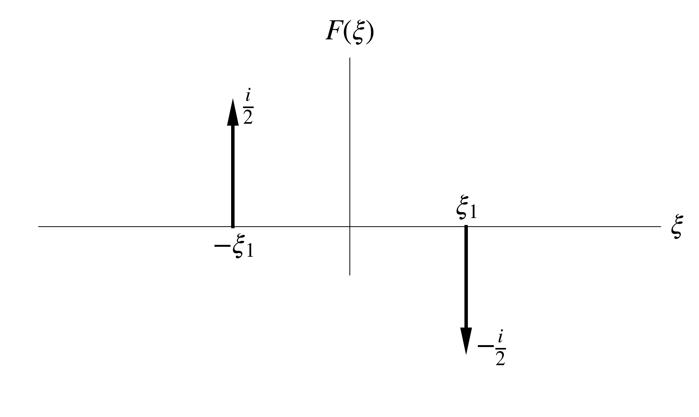
A similar conclusion can be drawn from the third waveform $w_{3}=1.2 \text{sin}(60\pi t)$ since it is also a sine wave, except with an amplitude factor of $1.2$ which leads to peaks of magnitude $1.2$ at $|\xi|=\xi_{3}=30$.
For cosine waveforms, such as $w_{2}=\text{cos}(30\pi t)$ we have to instead substitute in the following identity $$\text{cos}(\theta) = \frac{1}{2} (e^{i\theta}+e^{-i\theta})$$ Following a similar derivation as above, and using $\omega_{2}=30\pi$ leads to
\begin{align} F_{2}(\xi) &= \int_{-\infty}^{\infty} \text{cos}(2\pi\xi_{2} t) e^{-2\pi i\xi t} dt\\ &= \frac{1}{2} \int_{-\infty}^{\infty} (e^{2\pi i\xi_{2}t}+e^{-2\pi i\xi_{2} t}) e^{-2\pi i\xi t} dt \\ &= \frac{1}{2} \int_{-\infty}^{\infty} e^{-2\pi i(\xi-\xi_{2})t} dt + \frac{1}{2} \int_{-\infty}^{\infty} e^{-2\pi i(\xi+\xi_{2})t} dt\\ &= \frac{1}{2} \delta(\xi-\xi_{2}) + \frac{1}{2} \delta(\xi+\xi_{2}) \end{align}
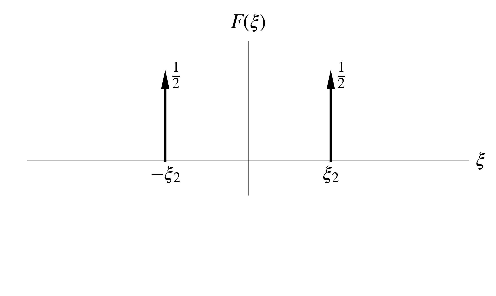
With the linear nature of Fourier transform, we can sum the Fourier transforms of the component waveforms to arrive at the Fourier transform of the total waveform $F_{t}(\omega)$
\begin{align} w &= w_1 + w_2 + w_3 \\ F(w) &= F(w_1) + F(w_2) + F(w_3) \\ F_{t}(\omega) &= F_{1}(\omega) + F_{2}(\omega) + F_{3}(\omega) \\ F_{t}(\omega) &= -0.5i\delta(\xi-5) + 0.5i\delta(\xi+5) \\ &+ 0.5 \delta(\xi-15) + 0.5 \delta(\xi+15) \\ &-0.6 i\delta(\xi-30) + 0.6 i\delta(\xi+30) \end{align}
Due to the complex nature of this equation, containing both imaginary and real terms, the following visualisation is of the magnitude $|F_{t}(\omega)|$
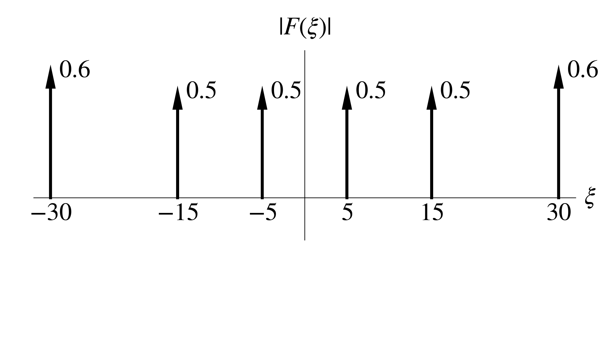
While we were working with continuous integrals with infinite limits to grasp the basics of Fourier Transforms, in reality when applying the Fourier Transform to real data we will work with a discrete and finite dataset with $N$ elements.
For this, we need to discretise the continuous variables $t$ and $\xi$.
For $t$, this is $$t = n \Delta t \text{ for } n=0, 1, ..., N-1$$
As for the frequency term, we can define its discrete spacing as $\Delta \xi=\frac{1}{N\Delta t}$
Then, for $\xi$ it is discretised as $$\xi = \frac{k}{N\Delta t} \text{ for } k=0, 1, ..., N-1$$
Finally, we need to change from a continuous integral into a discrete sum, so for the Fourier Transform we start with $$F_{k} = \sum_{n=0}^{N-1} f_{n} e^{- 2\pi i \Delta \xi \Delta t}$$
Substituting in $\xi$ and $t$ results in \begin{align} F_{k} &= \sum_{n=0}^{N-1} f_{n} e^{-2\pi i \frac{k}{N\Delta t} n \Delta t} \Delta t\\ F_{k} &= \Delta t \sum_{n=0}^{N-1} f_{n} e^{-2\pi i \frac{k n}{N}} \end{align}
Repeating this with the inverse Fourier Transform results in \begin{align} f_{n} &= \sum_{k=0}^{N-1} F_{k} e^{2\pi i \frac{k}{N\Delta t} n \Delta t} \Delta \xi \\ &= \frac{1}{N \Delta t} \sum_{k=0}^{N-1} F_{k} e^{2\pi i \frac{k n}{N}} \end{align}
To make this Fourier and inverse Fourier transform pair unitary, we will modify these so that both sums share the same factor of $\frac{1}{\sqrt{N}}$ \begin{align} F_{k} &= \frac{1}{\sqrt{N}}\sum_{n=0}^{N-1} f_{n} e^{-2\pi i \frac{k n}{N}}\\ f_{n} &= \frac{1}{\sqrt{N}} \sum_{k=0}^{N-1} F_{k} e^{2\pi i \frac{k n}{N}} \end{align}
This subsection is currently a work in progress.
This subsection is currently a work in progress.
This subsection is currently a work in progress.
This subsection is currently a work in progress.
This subsection is currently a work in progress.
This section is currently a work in progress.
To internalise the concepts presented here, it helps to write out derivations with pen-and-paper.
The source YouTube playlist of the course is freely available, along with lecture notes, and definitely worth checking out if you prefer learning in a lecture format. Specifically, I based this chapter on lectures 2.1 and 2.2.
Another recommended resource which I've consulted when writing this, is the seminal textbook 'Quantum Computation and Quantum Information' (10th Anniversary Edition) by Michael Nielsen and Isaac Chuang. While this is unfortunately not freely available, it is worth going through this or another textbook (or a similar resource) and solve questions with pen-and-paper to build a more rigorous understanding after going through this tutorial. In the case of 'Quantum Computation and Quantum Information', I would recommend going through chapters 1, 5 and 6.